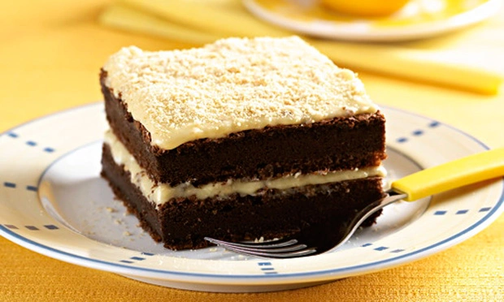
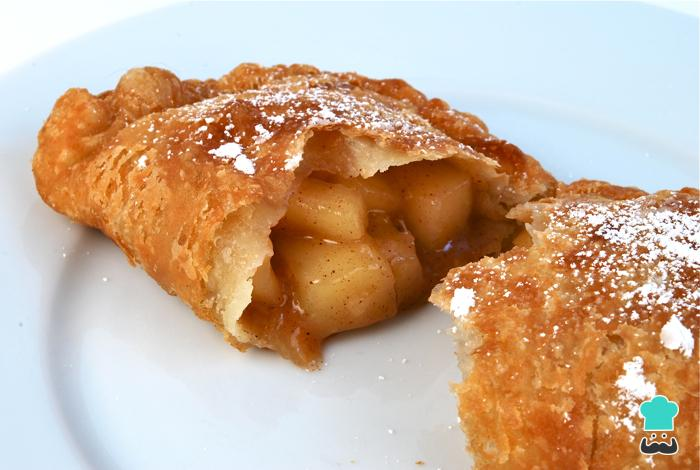
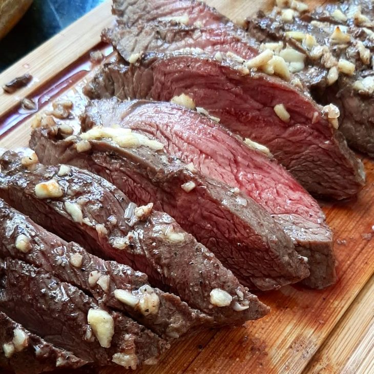

Escola de culinária Odonto Excellence
Somos apaixonados pela área de educação, e transformar a vida das pessoas é nossa missão. Acreditamos que com a nossa proposta de oferecer aulas práticas direcionadas nas áreas de gastronomia, iremos formar profissionais completos e conseguir mudar a realidade de muita gente.
Receita de Bolo de Chocolate com Leite Condensado

RECEITA E PASSO A PASSO
Pasteu de Maçã

RECEITA E PASSO A PASSO
Fraldinha na Manteiga e Alho

RECEITA E PASSO A PASSO
Av. Eusébio de Queirós, 1120
0800 005 4141
Matricule-se agora mesmo. Aulas Teóricas e Práticas com Professores que já atuam na área. Sua carreira de sucesso começa aqui!
Inscreva-se
Alunos cadastrados